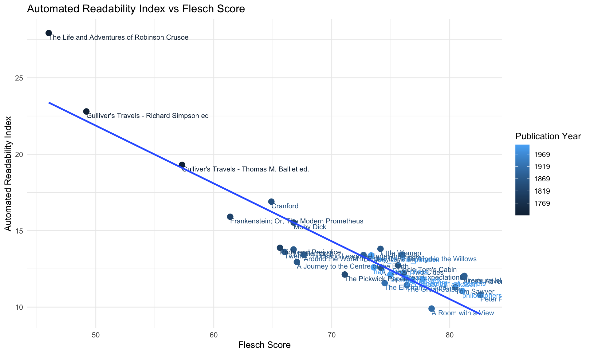

library(tidyverse)
library(tidytext)
library(harrypotter)
library(dplyr)
library(tibble)
library(readr)
library(stringr)
library(purrr)
library(stringr)
library(tokenizers)
library(nsyllable)
library(GGally)
library(corrr)
theme_set(theme_minimal())Notes
Script to fetch textual data from x source
install.packages(c("tidyverse", "tidytext", "devtools", "tokenizers", "nsyllable", "GGally", "corrr"))Get Harry Potter files
devtools::install_github("bradleyboehmke/harrypotter")Exploring the Harry Potter Library
- Import the libraries
- Get full text of one book
Each book is represented as a character vector where each element corresponds to a chapter
bookvar <- philosophers_stone
substr(bookvar[1], 1, 50)[1] "THE BOY WHO LIVED Mr. and Mrs. Dursley, of number"- Count the number of chapters
sprintf("%d chapters", length(bookvar))[1] "17 chapters"Prepare the Corpus
- Create an object to store the books
hp_books <- c(
"philosophers_stone",
"chamber_of_secrets",
"prisoner_of_azkaban",
"goblet_of_fire",
"order_of_the_phoenix",
"half_blood_prince",
"deathly_hallows" )
hp_books[1] "philosophers_stone" "chamber_of_secrets" "prisoner_of_azkaban"
[4] "goblet_of_fire" "order_of_the_phoenix" "half_blood_prince"
[7] "deathly_hallows" - Combine the book objects into a list
Note to myself. Don’t print the hp_words object until convert it to a data frame
hp_words <- list(
philosophers_stone,
chamber_of_secrets,
prisoner_of_azkaban,
goblet_of_fire,
order_of_the_phoenix,
half_blood_prince,
deathly_hallows
) %>%
# name each list element
set_names(hp_books) %>%
# convert each book to a tibble data frame and merge into a big tibble using map_df() using "book" as column name.
map_df(as_tibble, .id = "book") %>%
# convert book to a factor (categorical variable, sort in the orden given by hp_books)
mutate(book = factor(book, levels = hp_books)) %>%
# remove empty chapters. Just for safety
drop_na(value) %>%
# create a chapter id column
group_by(book) %>%
mutate(chapter = row_number(book)) %>%
ungroup() %>%
# tokenize the data frame
unnest_tokens(word, value)
hp_words# A tibble: 1,089,386 × 3
book chapter word
<fct> <int> <chr>
1 philosophers_stone 1 the
2 philosophers_stone 1 boy
3 philosophers_stone 1 who
4 philosophers_stone 1 lived
5 philosophers_stone 1 mr
6 philosophers_stone 1 and
7 philosophers_stone 1 mrs
8 philosophers_stone 1 dursley
9 philosophers_stone 1 of
10 philosophers_stone 1 number
# ℹ 1,089,376 more rowsExplore the books
Count words per book (including stop words)
all_words <- hp_words %>%
# count unique words per book
group_by(book) %>%
summarise(total_words = n()) %>%
mutate(book = factor(book, levels = hp_books))
all_words %>%
# Create barplot
ggplot(aes(x = book, y = total_words, fill = book)) +
geom_col(color = "black") +
geom_text(aes(label = total_words), vjust=1.5) +
scale_x_reordered() +
labs(
title = "Number of Words per Book",
x = NULL,
y = "Word Count"
) +
theme(
legend.position = "none"
)Count unique words per book (No stopwords)
no_stopwords <- hp_words %>%
# delete stopwords
anti_join(stop_words)Joining with `by = join_by(word)`unique_per_book <- no_stopwords %>%
# count unique words per book
group_by(book) %>%
summarise(unique_count = n_distinct(word)) %>%
mutate(book = factor(book, levels = hp_books)) %>%
# Create barplot
ggplot(aes(x = book, y = unique_count, fill = book)) +
geom_col(color = "black") +
geom_text(aes(label = unique_count), vjust=1.5) +
scale_x_reordered() +
labs(
title = "Number of Unique Words per Book (No stopwords)",
x = NULL,
y = "Word Count"
) +
theme(
legend.position = "none"
)
unique_per_bookLexical Density
Lexical density is the calculation of the unique number of words divided by the sum of words in a text. The ratio is represented in a percentage of how varied the words are in the text. The formula to calculate the lexical density is:
\[ L_d = (N_{lex}/N) \times 100 \]
lexical_density <- no_stopwords %>%
# count unique words per book
group_by(book) %>%
summarise(
total_words = n(),
unique_words = n_distinct(word),
vocab_density = (unique_words / total_words) * 100
) %>%
dplyr::mutate_if(is.numeric, round, 2) %>%
mutate(book = factor(book, levels = hp_books))
lexical_density# A tibble: 7 × 4
book total_words unique_words vocab_density
<fct> <dbl> <dbl> <dbl>
1 philosophers_stone 28585 5421 19.0
2 chamber_of_secrets 33621 6687 19.9
3 prisoner_of_azkaban 41188 7087 17.2
4 goblet_of_fire 72663 9919 13.6
5 order_of_the_phoenix 96777 12187 12.6
6 half_blood_prince 63098 10823 17.2
7 deathly_hallows 73406 11527 15.7And the plot
lexical_density %>%
ggplot(aes(x = book, y = vocab_density, group = 1)) +
geom_line(color = "steelblue", linewidth = 2) +
geom_point(size = 3, color = "black", fill = "white", shape = 21) +
geom_text(aes(label = paste("LD: ",vocab_density," n: ",total_words)), hjust=1.5) +
labs(
title = "Lexical Density Accross Harry Potter Book Series",
x = NULL,
y = "Lexical density"
) +
theme_minimal()Lexical density tends to decrease as the books increase in length, reflecting a general trend toward more repetitive or uniform language in the longer volumes. However, this relationship is not strictly linear. Notably, Chamber of Secrets exhibits the highest lexical density, even though it is not the shortest book. Similarly, the final two books—Half-Blood Prince and Deathly Hallows—show a modest rebound in density, approaching the levels of Prisoner of Azkaban, despite their substantially greater length. These deviations suggest that factors beyond length—such as narrative complexity or character focus—may influence lexical variety across the series.
This negative correlation can be visualized using a scatterplot with a regression line (gray is the confidence interval).
model <- lm(vocab_density ~ total_words, data = lexical_density)
slope <- coef(model)[2]
intercept <- coef(model)[1]
r2 <- summary(model)$r.squared
ggplot(lexical_density, aes(x = total_words, y = vocab_density)) +
geom_point(size = 2, shape = 23) +
geom_smooth(method = lm, se = FALSE, color = "steelblue", formula = 'y ~ x') +
geom_text(aes(label = book), vjust = 1.5) +
annotate("text", x = 3000, y = 19, hjust = 0,
label = paste0("y = ", round(slope, 4), "x + ", round(intercept, 2),
"\nR² = ", round(r2, 4))) +
labs(
title = "Correlation Between Lexical Density and Number of Words",
x = "Number of Words",
y = "Lexical Density"
) +
theme_minimal()What this is basically saying is that for every additional 1,000 words in a book, the lexical density decreases by about 0.1 (since -0.0001 × 1000 = -0.1).
R² = 0.8615 This means that 86.15% of the variation in lexical density can be explained by the variation in total word count.
That’s a very strong correlation for such a small sample size (n = 7 books), suggesting a clear and consistent downward trend.
Would lexical complexity from harry potter is lower that in classical literature?
books_meta <- tribble(
~author, ~title, ~year, ~url,
"Jane Austen", "Pride and Prejudice", 1813, "https://www.gutenberg.org/ebooks/1342.txt.utf-8",
"Charles Dickens", "A Tale of Two Cities", 1859, "https://www.gutenberg.org/ebooks/98.txt.utf-8",
"F. Scott Fitzgerald", "The Great Gatsby", 1925, "https://www.gutenberg.org/ebooks/64317.txt.utf-8",
"Mary Wollstonecraft Shelley", "Frankenstein; Or, The Modern Prometheus", 1818, "https://www.gutenberg.org/ebooks/84.txt.utf-8",
"Herman Melville", "Moby Dick", 1851, "https://www.gutenberg.org/ebooks/2701.txt.utf-8",
"Louisa May Alcott", "Little Women", 1868, "https://www.gutenberg.org/ebooks/37106.txt.utf-8",
"Mark Twain", "Tom Sawyer", 1876, "https://www.gutenberg.org/ebooks/74.txt.utf-8",
"Jonathan Swift", "Gulliver's Travels - Thomas M. Balliet ed.", 1726, "https://www.gutenberg.org/ebooks/17157.txt.utf-8",
"E. M. Forster", "A Room with a View", 1908, "https://www.gutenberg.org/ebooks/2641.txt.utf-8",
"Elizabeth Von Arnim", "The Enchanted April", 1922, "https://www.gutenberg.org/ebooks/16389.txt.utf-8",
"Lewis Carroll", "Alice's Adventures in Wonderland", 1865, "https://www.gutenberg.org/ebooks/11.txt.utf-8",
"George Eliot", "Middlemarch", 1871, "https://www.gutenberg.org/ebooks/145.txt.utf-8",
"Elizabeth Gaskell", "Cranford", 1853, "https://www.gutenberg.org/ebooks/394.txt.utf-8",
"R. L. Stevenson", "Dr. Jekyll and Mr. Hyde", 1886, "https://www.gutenberg.org/ebooks/43.txt.utf-8",
"Charles Dickens", "The Pickwick Papers", 1836, "https://www.gutenberg.org/ebooks/580.txt.utf-8",
"Daniel Defoe", "The Life and Adventures of Robinson Crusoe", 1719, "https://www.gutenberg.org/ebooks/521.txt.utf-8",
"J. M. Barrie", "Peter Pan", 1911, "https://www.gutenberg.org/ebooks/16.txt.utf-8",
"Charles Dickens", "Great Expectations", 1861, "https://www.gutenberg.org/ebooks/1400.txt.utf-8",
"Harriet Beecher Stowe", "Uncle Tom's Cabin", 1852, "https://www.gutenberg.org/ebooks/203.txt.utf-8",
"Robert Louis Stevenson", "Treasure Island", 1881, "https://www.gutenberg.org/ebooks/120.txt.utf-8",
"Kenneth Grahame", "The Wind in the Willows", 1908, "https://www.gutenberg.org/ebooks/27805.txt.utf-8",
"Jonathan Swift", "Gulliver's Travels - Richard Simpson ed", 1726, "https://www.gutenberg.org/ebooks/829.txt.utf-8",
"Jules Verne", "Twenty Thousand Leagues Under the Seas", 1871, "https://www.gutenberg.org/ebooks/2488.txt.utf-8",
"Jules Verne", "A Journey to the Centre of the Earth", 1864, "https://www.gutenberg.org/ebooks/18857.txt.utf-8",
"Jules Verne", "Around the World in Eighty Days", 1872, "https://www.gutenberg.org/ebooks/103.txt.utf-8"
)
books_meta# A tibble: 25 × 4
author title year url
<chr> <chr> <dbl> <chr>
1 Jane Austen Pride and Prejudice 1813 http…
2 Charles Dickens A Tale of Two Cities 1859 http…
3 F. Scott Fitzgerald The Great Gatsby 1925 http…
4 Mary Wollstonecraft Shelley Frankenstein; Or, The Modern Prometh… 1818 http…
5 Herman Melville Moby Dick 1851 http…
6 Louisa May Alcott Little Women 1868 http…
7 Mark Twain Tom Sawyer 1876 http…
8 Jonathan Swift Gulliver's Travels - Thomas M. Balli… 1726 http…
9 E. M. Forster A Room with a View 1908 http…
10 Elizabeth Von Arnim The Enchanted April 1922 http…
# ℹ 15 more rows- Processing Function
safe_read_lines <- function(url) {
lines <- tryCatch(read_lines(url,locale = locale(encoding = "UTF-8")), error = function(e) return(NA))
return(lines)
}
clean_guthenbergs <- function(lines) {
start <- grep("\\*\\*\\* START OF (THE|THIS)", lines)
end <- grep("\\*\\*\\* END OF (THE|THIS)", lines)
text <- tryCatch(lines[(start + 1):(end - 1)], error = function(e) return(lines))
text <- str_remove_all(paste(text, collapse = "\n"), "(?s)\\[.*?\\]") %>%
str_split("\n") %>%
.[[1]] %>%
str_trim() %>%
discard(~ .x == "")
}
process_books <- function(url) {
# check if the book was downloaded, if not, save text in data folder
if (!dir.exists("data")) dir.create("data")
file_name <- basename(url) %>% str_remove(".utf-8")
local_file_path <- file.path("data", file_name)
if (!file.exists(local_file_path)) {
lines <- safe_read_lines(url)
if (!(length(lines) == 1 && is.na(lines))) {
writeLines(lines, local_file_path)
}
}
lines <- safe_read_lines(local_file_path)
}
tf_idf_books <- function(url) {
book_processed <- process_books(url)
text <- clean_guthenbergs(book_processed)
if (length(text) == 1 && is.na(text)) {
return(tibble(total_words = NA, unique_words = NA, lexical_density = NA))
}
# create the df/tibble
text_df <- tibble(text = text) %>%
unnest_tokens(word, text) %>%
anti_join(stop_words, by = "word")
# tf/idf of the book
total_words <- nrow(text_df)
unique_words <- n_distinct(text_df$word)
tibble(
total_words = total_words,
unique_words = unique_words,
lexical_density = round((unique_words / total_words) * 100, 2)
)
}# apply the tf_idf_books function to a single book
sample_book <- books_meta %>%
filter(title == "Pride and Prejudice") %>%
pull(url) %>%
tf_idf_books()
sample_book# A tibble: 1 × 3
total_words unique_words lexical_density
<int> <int> <dbl>
1 39233 6560 16.7And now that we know that our function works, we can apply it to all books in the books_meta data frame:
results <- books_meta %>%
mutate(metrics = map(url, tf_idf_books)) %>%
unnest(metrics)
results# A tibble: 25 × 7
author title year url total_words unique_words lexical_density
<chr> <chr> <dbl> <chr> <int> <int> <dbl>
1 Jane Austen Prid… 1813 http… 39233 6560 16.7
2 Charles Dickens A Ta… 1859 http… 46636 9330 20.0
3 F. Scott Fitzgera… The … 1925 http… 17699 5459 30.8
4 Mary Wollstonecra… Fran… 1818 http… 27315 6589 24.1
5 Herman Melville Moby… 1851 http… 86195 17276 20.0
6 Louisa May Alcott Litt… 1868 http… 65870 10658 16.2
7 Mark Twain Tom … 1876 http… 26448 7058 26.7
8 Jonathan Swift Gull… 1726 http… 18045 5406 30.0
9 E. M. Forster A Ro… 1908 http… 23114 6378 27.6
10 Elizabeth Von Arn… The … 1922 http… 24427 5711 23.4
# ℹ 15 more rows- Add the Harry Potter Books
hp_lexical <- lexical_density %>%
rename(
title = book,
lexical_density = vocab_density
) %>%
mutate(
author = "J.K. Rowling",
year = case_when(
title == "philosophers_stone" ~ 1997,
title == "chamber_of_secrets" ~ 1998,
title == "prisoner_of_azkaban" ~ 1999,
title == "goblet_of_fire" ~ 2000,
title == "order_of_the_phoenix" ~ 2003,
title == "half_blood_prince" ~ 2005,
title == "deathly_hallows" ~ 2007
),
url = NA_character_,
text = case_when(
title == "philosophers_stone" ~ list(philosophers_stone),
title == "chamber_of_secrets" ~ list(chamber_of_secrets),
title == "prisoner_of_azkaban" ~ list(prisoner_of_azkaban),
title == "goblet_of_fire" ~ list(goblet_of_fire),
title == "order_of_the_phoenix" ~ list(order_of_the_phoenix),
title == "half_blood_prince" ~ list(half_blood_prince),
title == "deathly_hallows" ~ list(deathly_hallows)
)
) %>%
select(author, title, year, url, text, total_words, unique_words, lexical_density)
hp_lexical# A tibble: 7 × 8
author title year url text total_words unique_words lexical_density
<chr> <fct> <dbl> <chr> <lis> <dbl> <dbl> <dbl>
1 J.K. Rowling philo… 1997 <NA> <chr> 28585 5421 19.0
2 J.K. Rowling chamb… 1998 <NA> <chr> 33621 6687 19.9
3 J.K. Rowling priso… 1999 <NA> <chr> 41188 7087 17.2
4 J.K. Rowling goble… 2000 <NA> <chr> 72663 9919 13.6
5 J.K. Rowling order… 2003 <NA> <chr> 96777 12187 12.6
6 J.K. Rowling half_… 2005 <NA> <chr> 63098 10823 17.2
7 J.K. Rowling death… 2007 <NA> <chr> 73406 11527 15.7all_books <- bind_rows(results %>% mutate(text = NA), hp_lexical) %>%
arrange(desc(lexical_density))
all_books# A tibble: 32 × 8
author title year url total_words unique_words lexical_density text
<chr> <chr> <dbl> <chr> <dbl> <dbl> <dbl> <list>
1 R. L. Stev… Dr. … 1886 http… 8471 3524 41.6 <NULL>
2 F. Scott F… The … 1925 http… 17699 5459 30.8 <NULL>
3 Jonathan S… Gull… 1726 http… 18045 5406 30.0 <NULL>
4 Kenneth Gr… The … 1908 http… 20879 6172 29.6 <NULL>
5 J. M. Barr… Pete… 1911 http… 15375 4423 28.8 <NULL>
6 E. M. Fors… A Ro… 1908 http… 23114 6378 27.6 <NULL>
7 Lewis Carr… Alic… 1865 http… 8394 2301 27.4 <NULL>
8 Mark Twain Tom … 1876 http… 26448 7058 26.7 <NULL>
9 Elizabeth … Cran… 1853 http… 23559 6109 25.9 <NULL>
10 Jules Verne Arou… 1872 http… 25216 6417 25.4 <NULL>
# ℹ 22 more rows- Visualize lexical density over time
model <- lm(lexical_density ~ year, data = all_books)
slope <- coef(model)[2]
intercept <- coef(model)[1]
r2 <- summary(model)$r.squared
sprintf("y = % s, x + % s, R² = % s", round(slope, 4), round(intercept, 2), round(r2, 4))[1] "y = -0.0163, x + 52.57, R² = 0.0406"ggplot(all_books, aes(x=year, y=lexical_density)) +
geom_point(color = "steelblue", size = 3) +
geom_smooth(method = "lm", se = FALSE, formula = 'y ~ x') +
geom_text(aes(label = title), hjust = 0, vjust = 1.3, size = 3) +
labs(
title = "Lexical Density over Time",
x = "publication year",
y = "Lexical Density %"
) +
theme_minimal()
The regression model shows a very weak negative correlation between publication year and lexical density (R² = 0.0406). While there is a slight downward trend toward simpler vocabulary in more recent fiction (approximately 0.0163 percentage points less lexical density per year, or about 1.63 per century) the variation between individual works suggests that this is not a strong or consistent pattern across literary history. This indicates that authorial style, genre, and intended audience likely play a more significant role in shaping vocabulary diversity than time alone.
Readability
Now that we have explored the lexical complexity of each book, let’s explore their readability using the Flesch Reading Ease Score. This formula assesses how easy or difficult it is to read a piece of text, like a book. The higher the score, the easier it is to read. The formula is as follows:
\[ FRE = 206.835 - 1.015 \left( \frac{\text{total words}}{\text{total sentences}} \right) - 84.6 \left( \frac{\text{total syllables}}{\text{total words}} \right) \]
Now, we can write a function that help us to calculate this:
calculate_sentences <- function(text) {
tokenized_text <- tokenize_sentences(paste(text, collapse = "\n")) %>%
unlist()
return(length(tokenized_text))
}
calculate_words <- function(text) {
tokenized_text <- tokenize_words(paste(text, collapse = "\n")) %>%
unlist()
return(length(tokenized_text))
}
calculate_syllabes <- function(text) {
# Tokenize the text into words
words <- tokenize_words(paste(text, collapse = "\n")) %>%
unlist()
# Count syllables in each word
syllable_counts <- nsyllable::nsyllable(words)
total_syllables <- sum(syllable_counts, na.rm = TRUE)
return(total_syllables)
}
flesch_reading_ease <- function(url, text = NULL) {
if (is.na(url) && !is.null(text)) {
lines <- text
} else if (!is.na(url)) {
# Check if the URL is valid
if (!grepl("^https?://", url)) {
stop("Invalid URL provided.")
}
book_processed <- process_books(url)
lines <- clean_guthenbergs(book_processed)
} else {
return(tibble(flesch_score = NA))
}
if (length(lines) == 1 && is.na(lines)) {
return(tibble(flesch_score = NA))
}
# calculate the number of sentences
total_sentences <- calculate_sentences(lines)
total_words <- calculate_words(lines)
total_syllables <- calculate_syllabes(lines)
ASL <- total_words / total_sentences
ASW <- total_syllables / total_words
# calculate the Flesch Reading Ease score
flesch_score <- 206.835 - (1.015 * ASL) - (84.6 * ASW)
# create the tibble
tibble(
total_sentences = total_sentences,
total_syllables = total_syllables,
average_sentence_length = round(ASL, 2),
average_syllables_per_word = round(ASW, 2),
flesch_score = round(flesch_score, 2)
)
}sample_book <- all_books %>%
filter(title == "Pride and Prejudice") %>%
pull(url) %>%
flesch_reading_ease()
sample_book# A tibble: 1 × 5
total_sentences total_syllables average_sentence_length average_syllables_pe…¹
<int> <int> <dbl> <dbl>
1 7245 185620 17.6 1.46
# ℹ abbreviated name: ¹average_syllables_per_word
# ℹ 1 more variable: flesch_score <dbl>And, now that we have the function, we can apply it to all books:
all_books_readability <- all_books %>%
mutate(metrics = map2(url, text, flesch_reading_ease)) %>%
unnest(metrics)
all_books_readability# A tibble: 32 × 13
author title year url total_words unique_words lexical_density text
<chr> <chr> <dbl> <chr> <dbl> <dbl> <dbl> <list>
1 R. L. Stev… Dr. … 1886 http… 8471 3524 41.6 <NULL>
2 F. Scott F… The … 1925 http… 17699 5459 30.8 <NULL>
3 Jonathan S… Gull… 1726 http… 18045 5406 30.0 <NULL>
4 Kenneth Gr… The … 1908 http… 20879 6172 29.6 <NULL>
5 J. M. Barr… Pete… 1911 http… 15375 4423 28.8 <NULL>
6 E. M. Fors… A Ro… 1908 http… 23114 6378 27.6 <NULL>
7 Lewis Carr… Alic… 1865 http… 8394 2301 27.4 <NULL>
8 Mark Twain Tom … 1876 http… 26448 7058 26.7 <NULL>
9 Elizabeth … Cran… 1853 http… 23559 6109 25.9 <NULL>
10 Jules Verne Arou… 1872 http… 25216 6417 25.4 <NULL>
# ℹ 22 more rows
# ℹ 5 more variables: total_sentences <int>, total_syllables <int>,
# average_sentence_length <dbl>, average_syllables_per_word <dbl>,
# flesch_score <dbl>So, we can expect that the Flesch Reading Ease Score is higher in books with lower lexical density, and vice versa. Let’s visualize this relationship:
model <- lm(flesch_score ~ lexical_density, data = all_books_readability)
slope <- coef(model)[2]
intercept <- coef(model)[1]
r2 <- summary(model)$r.squared
sprintf("y = % s, x + % s, R² = % s", round(slope, 4), round(intercept, 2), round(r2, 4))[1] "y = 0.1178, x + 68.89, R² = 0.0075"fre_plot <- ggplot(all_books_readability, aes(x = lexical_density, y = flesch_score, color = as.Date(as.character(year), "%Y"))) +
geom_point(size = 3) +
scale_colour_date(
name = "Publication Year",
date_labels = "%Y",
date_breaks = "50 years"
) +
geom_text(aes(label = title), hjust = 0, vjust = 1.3, size = 3) +
labs(
title = "Flesch Reading Ease Score vs Lexical Density",
x = "Lexical Density (%)",
y = "Flesch Reading Ease Score"
) +
theme_minimal()
fre_plot +
geom_smooth(
data = all_books_readability,
mapping = aes(x = lexical_density, y = flesch_score),
method = "lm",
se = FALSE,
inherit.aes = FALSE,
formula = 'y ~ x'
)The regression analysis of Flesch Reading Ease score as a function of lexical density reveals a negligible positive correlation (R² = 0.0075). Although the model suggests that texts with higher lexical density may be slightly easier to read, this relationship is extremely weak and likely not meaningful. This result suggests that lexical variety alone is a poor predictor of readability when considered independently of sentence length and syllabic complexity.
Understandability
Similarly to the readability, the Automated Readability Index (ARI) is a formula that estimates what school grade level is required to understand a piece of text. The formula is as follows:
\[ ARI = 4.71 \left( \frac{\text{total characters}}{\text{total words}} \right) + 0.5 \left( \frac{\text{total words}}{\text{total sentences}} \right) - 21.43 \] So, as we did with the Flesch Reading Ease Score, we can write a function to calculate the ARI:
calculate_characters <- function(text) {
# Count the number of characters in the text
total_characters <- nchar(paste(text, collapse = "\n"))
return(total_characters)
}
automated_readability_index <- function(url, text = NULL) {
if (is.na(url) && !is.null(text)) {
lines <- text
} else if (!is.na(url)) {
# Check if the URL is valid
if (!grepl("^https?://", url)) {
stop("Invalid URL provided.")
}
book_processed <- process_books(url)
lines <- clean_guthenbergs(book_processed)
} else {
return(tibble(ari_score = NA))
}
if (length(lines) == 1 && is.na(lines)) {
return(tibble(ari_score = NA))
}
# calculate the number of sentences
total_sentences <- calculate_sentences(lines)
total_words <- calculate_words(lines)
total_characters <- calculate_characters(lines)
# calculate the ARI score
ari_score <- (4.71 * (total_characters / total_words)) + (0.5 * (total_words / total_sentences)) - 21.43
# create the tibble
tibble(
total_characters = total_characters,
ari_score = round(ari_score, 2)
)
}And, now we can apply it to the sample book, just to check if it works:
sample_book <- all_books_readability %>%
filter(title == "Pride and Prejudice") %>%
pull(url) %>%
automated_readability_index()
sample_book# A tibble: 1 × 2
total_characters ari_score
<int> <dbl>
1 716645 13.9And now we can apply it to all books:
all_books_ari <- all_books_readability %>%
mutate(metrics = map2(url, text, automated_readability_index)) %>%
unnest(metrics)
all_books_ari[, c("title", "year", "ari_score", "total_characters", "total_words", "total_sentences")]# A tibble: 32 × 6
title year ari_score total_characters total_words total_sentences
<chr> <dbl> <dbl> <int> <dbl> <int>
1 Dr. Jekyll and … 1886 13.4 138404 8471 1349
2 The Great Gatsby 1925 11.4 268365 17699 3521
3 Gulliver's Trav… 1726 19.3 284137 18045 1734
4 The Wind in the… 1908 13.4 326007 20879 3248
5 Peter Pan 1911 10.8 253712 15375 3354
6 A Room with a V… 1908 9.9 372827 23114 6345
7 Alice's Adventu… 1865 12.0 142856 8394 1631
8 Tom Sawyer 1876 11.3 389571 26448 4957
9 Cranford 1853 16.9 386477 23559 2762
10 Around the Worl… 1872 13.4 367307 25216 4108
# ℹ 22 more rowsAnd now we can try to figure out if there is a relationship between the ARI and FLesch scores. What we’re expecting is that as the ARI increases, Flesch decreases:
model <- lm(ari_score ~ flesch_score, data = all_books_ari)
slope <- coef(model)[2]
intercept <- coef(model)[1]
r2 <- summary(model)$r.squared
sprintf("y = % s, x + % s, R² = % s", round(slope, 4), round(intercept, 2), round(r2, 4))[1] "y = -0.3785, x + 40.8, R² = 0.8371"ari_plot <- ggplot(all_books_ari, aes(x = flesch_score, y = ari_score, color = as.Date(as.character(year), "%Y"))) +
geom_point(size = 3) +
scale_colour_date(
name = "Publication Year",
date_labels = "%Y",
date_breaks = "50 years"
) +
geom_text(aes(label = title), hjust = 0, vjust = 1.3, size = 3) +
labs(
title = "Automated Readability Index vs Flesch Score",
x = "Flesch Score",
y = "Automated Readability Index"
) +
theme_minimal()
ari_plot +
geom_smooth(
data = all_books_ari,
mapping = aes(x = flesch_score, y = ari_score),
method = "lm",
se = FALSE,
inherit.aes = FALSE,
formula = 'y ~ x'
)
The regression model reveals a strong inverse relationship between ARI and Flesch Reading Ease Score (R² = 0.8371). This confirms that, despite relying on different formulas, both readability indices capture similar aspects of textual complexity. As the ARI increases — indicating higher required education level — the Flesch score decreases, reflecting reduced ease of reading. This alignment strengthens the validity of both measures as proxies for syntactic and lexical complexity.
Metrics Combined
With all these metrics, would be fun to visualize them together, just to explore any relationship between them that can help us to understand our corpus better. So, let’s create a correlation matrix to visualize the relationships between the metrics.
- Build the matrix
all_books_metrics <- all_books_ari %>%
select(title, year, lexical_density, flesch_score, ari_score, total_words) %>%
drop_na()
correlation_matrix <- all_books_metrics %>%
select(-title) %>%
correlate() %>%
shave() %>%
fashion()Correlation computed with
• Method: 'pearson'
• Missing treated using: 'pairwise.complete.obs'correlation_matrix term year lexical_density flesch_score ari_score total_words
1 year
2 lexical_density -.20
3 flesch_score .73 .09
4 ari_score -.72 -.03 -.91
5 total_words .17 -.79 -.05 -.06 Frequency calculation
- Without removing stopwords
hp_words %>%
# count per word per book
count(book, word, sort=TRUE) %>%
# top 15
group_by(book) %>%
slice_max(order_by = n, n = 15) %>%
mutate(word = reorder_within(word, n, book)) %>%
# create barplot
ggplot(aes(x = word, y = n, fill = book)) +
geom_col(color = "black") +
scale_x_reordered() +
labs(
title = "Most frequent words in Harry Potter (no stop words)",
x = NULL,
y = "Word Count"
) +
facet_wrap(facets = vars(book), scales = "free") +
coord_flip() +
theme(
legend.position = "none",
strip.text = element_text(face = "bold", size = 10),
axis.text.y = element_text(size = 8, margin = margin(r = 6))
)- Removing stopwords
hp_words %>%
# delete stopwords
anti_join(stop_words) %>%
# count per word per book
count(book, word, sort=TRUE) %>%
# top 15
group_by(book) %>%
slice_max(order_by = n, n = 15) %>%
mutate(word = reorder_within(word, n, book)) %>%
# create barplot
ggplot(aes(x = word, y = n, fill = book)) +
geom_col(color = "black") +
scale_x_reordered() +
labs(
title = "Most frequent words in Harry Potter",
x = NULL,
y = "Word count"
) +
facet_wrap(facets = vars(book), scales = "free") +
coord_flip() +
theme(
legend.position = "none",
)Joining with `by = join_by(word)`
TF-IDF (Term Frequency-Inverse Document Frequency)
- Find terms that are unique or characteristic per book:
hp_words %>%
# delete stopwords
anti_join(stop_words) %>%
# count per word per book
count(book, word, sort=TRUE) %>%
# tf-idf
bind_tf_idf(word, book, n) %>%
# top 15
group_by(book) %>%
slice_max(order_by = tf_idf, n = 15) %>%
mutate(word = reorder_within(word, n, book)) %>%
# create barplot
ggplot(aes(x = word, y = tf_idf, fill = book)) +
geom_col(color = "black") +
scale_x_reordered() +
labs(
title = "TF-IDF in Harry Potter",
x = NULL,
y = "TF-IDF"
) +
facet_wrap(facets = vars(book), scales = "free") +
coord_flip() +
theme(
legend.position = "none",
)Joining with `by = join_by(word)`